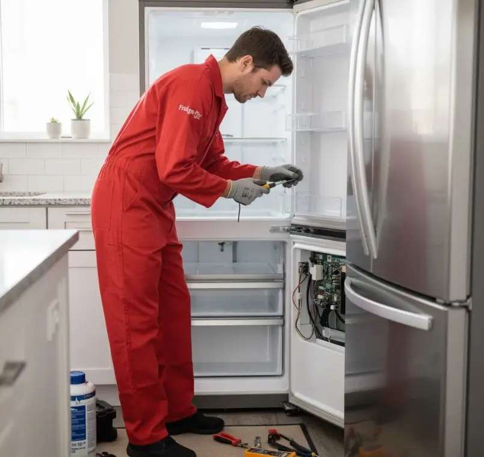

كيف تطيل عمر الثلاجة من خلال العناية الصحيحة
روتين بسيط في الاستخدام والتنظيف والفحص يمكن أن يساعدك على الحفاظ على كفاءة الثلاجة وتقليل فرص الأعطال المفاجئة.
الثلاجة من الأجهزة التي تعمل لساعات طويلة يوميًا، ولذلك فإن طريقة استخدامها والعناية بها تؤثر بصورة مباشرة على استقرار أدائها. إهمال التنظيف أو سوء التهوية أو تجاهل العلامات المبكرة للخلل قد يحول مشكلة بسيطة إلى إصلاح أكبر.
في هذا الدليل من أرشيف التوكيل للصيانة، نستعرض خطوات عملية تساعدك على إطالة عمر الثلاجة، مع توضيح ما يمكنك متابعته بنفسك ومتى تحتاج إلى فني متخصص.
الثلاجة بدأت تتصرف بشكل غير طبيعي؟
ضعف التبريد، الأصوات الجديدة أو التشغيل المستمر للموتور علامات تستحق الفحص قبل أن تتفاقم المشكلة.
اطلب فحص الثلاجةكيف تطيل عمر الثلاجة بالعناية الصحيحة؟
الهدف الأساسي هو تقليل الحمل غير الضروري على منظومة التبريد والحفاظ على تدفق الهواء بصورة جيدة.
- التهوية: اترك مسافة مناسبة خلف الثلاجة وحولها وفق تعليمات الموديل حتى تتمكن من التخلص من الحرارة بكفاءة.
- جوان الباب: نظف الإطار المطاطي بانتظام وتأكد من أن الباب يغلق بإحكام.
- الأطعمة الساخنة: تجنب وضع الطعام شديد السخونة مباشرة داخل الثلاجة.
- درجة الحرارة: استخدم الإعداد الموصى به في دليل جهازك بدل المبالغة في التبريد.
- التكديس: املأ الثلاجة بصورة معقولة، لكن لا تسد فتحات توزيع الهواء.
جدول صيانة وقائية شهري للثلاجة
المتابعة المنتظمة أفضل من انتظار العطل. خصص دقائق كل شهر لمراجعة النقاط الأساسية التالية:
| المهمة | الإجراء | الفائدة |
|---|---|---|
| تنظيف إطار الباب | مسحه بماء فاتر ومنظف مناسب وتجفيفه | تحسين إحكام الإغلاق |
| فحص فتحات التهوية | التأكد من عدم حجبها بالأطعمة أو الأكياس | توزيع أفضل للهواء |
| مراجعة التصريف | ملاحظة أي مياه راكدة أو تجمع غير طبيعي | اكتشاف مشاكل التصريف مبكرًا |
| مراقبة صوت الموتور | الانتباه للأصوات الجديدة أو غير المعتادة | التقاط مؤشرات الخلل مبكرًا |
| مراجعة تراكم الثلج | متابعة أي تراكم غير طبيعي حسب نوع الثلاجة | تجنب انخفاض كفاءة التبريد |
خطوات بسيطة يمكنك القيام بها في المنزل
- افصل الكهرباء قبل تنظيف الأجزاء الخارجية التي يمكن الوصول إليها بأمان.
- نظف منطقة التهوية والمكثف إذا كان الوصول إليها متاحًا وفق تصميم الجهاز وتعليماته.
- تأكد من استقرار الثلاجة على الأرض وعدم وجود اهتزازات غير معتادة.
- راجع فتحة تصريف المياه إذا لاحظت تجمعًا متكررًا للمياه، دون استخدام أدوات قد تتلف المكونات.
- راقب المروحة إن وجدت من الخارج، وإذا كان هناك صوت قوي أو توقف غير طبيعي فاطلب فحصًا فنيًا.
متى تحتاج الثلاجة إلى فحص دائرة التبريد؟
غاز التبريد يعمل داخل دائرة مغلقة، ولذلك لا يُفترض التعامل مع الشحن كإجراء دوري لمجرد مرور الوقت. إذا ظهرت علامات ضعف تبريد مستمر، أو كان الموتور يعمل لفترات طويلة دون الوصول إلى درجة التبريد المطلوبة، فقد تحتاج الدائرة إلى تشخيص لمعرفة السبب.
- ضعف واضح ومستمر في التبريد.
- تشغيل الموتور لفترات طويلة مع استمرار ضعف الأداء.
- نمط تجمد غير طبيعي أو غير متساوٍ داخل الفريزر.
- وجود آثار زيت حول بعض وصلات دائرة التبريد، مع ضرورة الفحص المتخصص للتأكد من السبب.
علامات تستحق فحص موتور الثلاجة
- تكتكة متكررة: قد تشير إلى مشكلة في محاولة بدء تشغيل الضاغط أو دائرة التشغيل.
- ضوضاء جديدة أو عالية: خصوصًا إذا ظهرت فجأة واستمرت.
- سخونة غير معتادة: ارتفاع الحرارة مع ضعف الأداء أو رائحة غير طبيعية يحتاج إلى فحص.
- اهتزاز قوي: قد يرتبط بالتثبيت أو أجزاء ميكانيكية تحتاج إلى مراجعة.
هل أصلح الثلاجة أم أشتري أخرى؟
لا يوجد رقم واحد يصلح لكل الحالات. القرار يعتمد على عمر الجهاز، نوع العطل، تكلفة القطع والإصلاح، توافر القطع المناسبة، وحالة الثلاجة بشكل عام.
- تكلفة الإصلاح: قارن تكلفة الإصلاح الفعلية بسعر جهاز بديل مناسب، بعد معرفة سبب العطل والقطع المطلوبة.
- عمر الجهاز: الأجهزة القديمة جدًا قد تحتاج إلى تقييم اقتصادي شامل قبل إصلاح أعطال رئيسية.
- تكرار الأعطال: تكرار الإصلاحات خلال فترة قصيرة قد يكون مؤشرًا على أن الجهاز يحتاج إلى تقييم أوسع.
- توافر قطع الغيار: تأكد من إمكانية توفير قطعة مناسبة ومتوافقة مع موديل الجهاز.
أسئلة شائعة
كم أنتظر قبل تشغيل الثلاجة بعد نقلها؟
يعتمد ذلك على طريقة النقل وتعليمات الشركة المصنعة. إذا تم نقل الثلاجة على جانبها أو بزاوية كبيرة، قد تحتاج إلى فترة انتظار أطول قبل التشغيل. ارجع إلى دليل الموديل للحصول على التعليمات الدقيقة.
هل أحتاج إلى منظم جهد للثلاجة؟
إذا كان التيار الكهربائي في المكان غير مستقر أو توجد تقلبات ملحوظة، يمكن أن يكون استخدام وسيلة حماية كهربائية مناسبة مفيدًا، مع اختيارها وفق مواصفات الجهاز والشبكة.
هل تلف لمبة الثلاجة يؤثر على التبريد؟
عادةً تكون الإضاءة منفصلة عن منظومة التبريد، لذلك تعطلها لا يعني تلقائيًا وجود مشكلة في التبريد. لكن أي عطل كهربائي مصحوب برائحة احتراق أو شرر يحتاج إلى فصل الكهرباء وطلب فحص متخصص.
هل يجب تنظيف الثلاجة من الخلف باستمرار؟
المتابعة الدورية للغبار حول مناطق التهوية والمكثف مفيدة، لكن الفترة المناسبة تختلف حسب تصميم الجهاز وبيئة المنزل. التزم بتعليمات الشركة المصنعة عند توفرها.
عايز تحافظ على ثلاجتك قبل ما العطل يكبر؟
التوكيل للصيانة يوفر خدمة صيانة وإصلاح الأجهزة المنزلية، مع إمكانية طلب زيارة منزلية أو الاستفسار عن استقبال الجهاز في مقر الشركة بحسب الحالة.
احجز أو استفسر الآنهل تواجه مشكلة أو عطلاً في جهازك؟
تواصل مع فريق "التوكيل للصيانة" الآن للحصول على استشارة فنية وفحص منزلي فوري بأعلى معايير الدقة والأمان.